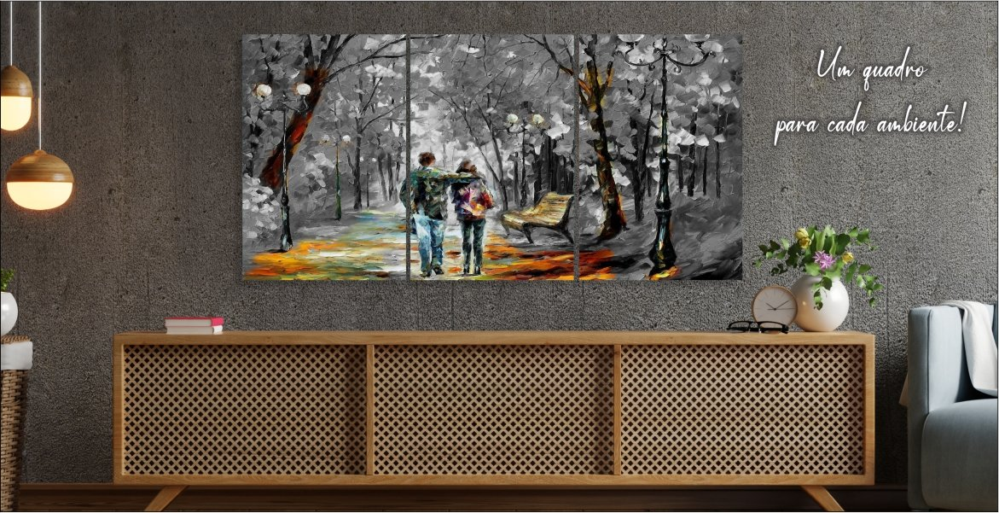

Uma das coisas mais belas no ramo fotográfico, é que suas diferentes técnicas e abordagens são muito versáteis. Em outras palavras, as fotos são usadas de diversas maneiras, para expressar diferentes coisas e, mesmo assim, servem para dar sentido à mensagem que o fotógrafo deseja transmitir.
Logicamente, isso não acontece do dia para a noite e nem é tão fácil como se pensa. Mas os profissionais experientes da área são capazes de moldar a fotografia, usando-a da forma que desejam e dando um novo significado para suas imagens.
A fotografia autoral é um grande exemplo. Além de demonstrar a versatilidade deste ramo, os registros autorais também evidenciam todo o potencial artístico da fotografia.
Expressar pensamentos, emoções, denúncias e situações do cotidiano são alguns pontos que norteiam a fotografia autoral. Nestes projetos, o fotógrafo se preocupa em criar imagens inéditas, demonstrar suas emoções e dispensa, algumas vezes, os olhares críticos e comerciais sobre suas imagens.